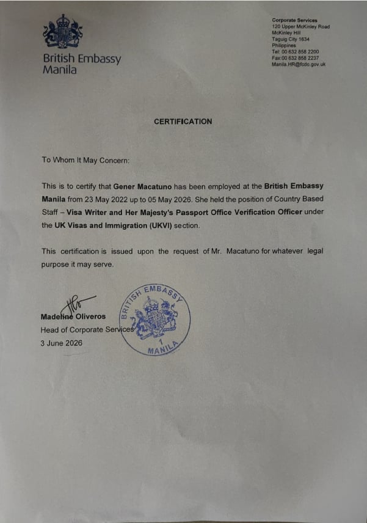
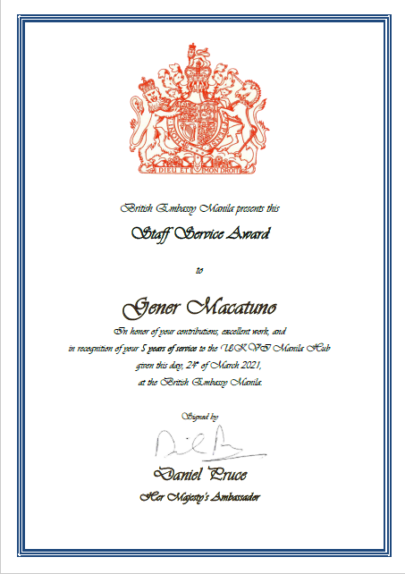

Experience
Visa Writer & HM Passport Office Verification Officer (AO)

Operational Support Team Officer | UK Visas & Immigration (UKVI) / British Embassy Manila
May 2022 – May 2026
- Drafted refusal notices and approval decision notes in strict accordance with UKVI guidelines.
- Managed operational workflows supporting HMPO and UKVI visa processing pipelines.
- Designed and deployed automated dashboards using Power Apps, Power Query, and Power BI.
- Processed high-volume visa and passport data transactions with 100% accuracy.
- Conducted audits of contracts, inventories, and archival records to ensure compliance.
- Served as liaison for complex internal and external inquiries, streamlining communication.
Entry Clearance Assistant & Visa Processor (LE4-A1)

British Embassy Manila
November 2015 – March 2021
- Supported operational teams in daily communications with central administration.
- Performed document verification, risk checks, and authenticity assessments.
- Produced monthly administrative reports and statistical dashboards.
- Coordinated logistics, records management, and training program support.
Temporary Office Staff
British Embassy Manila (via People 4 People Inc.)
2013 – 2015
- Processed purchase requests and coordinated supplier deliveries.
- Maintained organized filing systems and daily task-monitoring schedules.
- Drafted correspondence, formatted reports, and arranged meeting facilities.
Awards & Achievements
Innovation Recognition (2026) – Nominated by Michael Fong for exceptional initiative and technical innovation.
“Gener has demonstrated a strong commitment to personal learning and development by proactively self-learning Microsoft PowerApps. Demonstrating initiative and innovation, he applied his newly acquired skills to solve a real operational challenge by developing the DVR PowerApp. This custom-built application empowers the Enrichment Team to efficiently capture forgery-related information and build a structured database. As a result, the team has significantly improved its ability to identify forgery trends and harmful agents. The PowerApp also enhances our existing profile and bulk tables by integrating evidence-based data, strengthening our operational intelligence and decision-making capabilities.”
Developed Tools & Systems
- DVR PowerApp – Custom-built PowerApp integrated with SharePoint and Excel for secure data capture and analysis.
- Automated Excel dashboards using Power Query for real-time updates and dynamic data visualization.
- Implemented formulas and sorting logic to identify forgery trends and agent profiles.
- Enhanced decision-making through evidence-based insights and streamlined reporting.
Note: Due to data sensitivity, screenshots of the DVR PowerApp tool cannot be shared. Instead, a photo of the official recognition for this achievement is provided below.